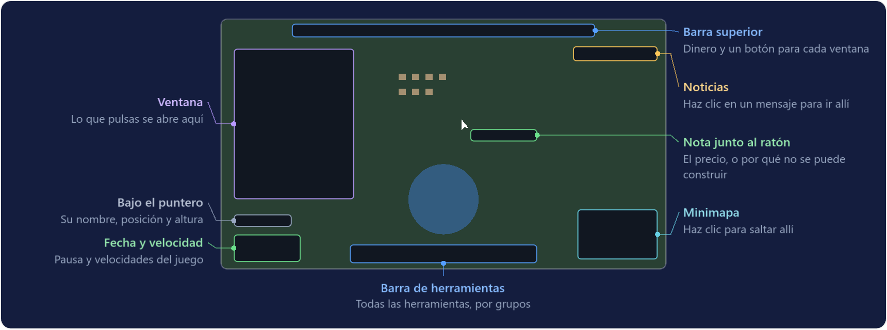

La pantalla
Las barras, las ventanas y la nota junto al ratón.
Todo está al alcance en tres sitios: la barra superior, la barra de herramientas de abajo y la nota que sigue al ratón.


| Dónde | Qué hace |
|---|---|
| Barra superior | Tu dinero (haz clic en él para abrir Finanzas) y un botón para cada ventana. |
| Fecha y velocidad | La fecha, en la esquina inferior izquierda, con la pausa y las velocidades del juego. |
| Barra de herramientas | Inspeccionar, Carreteras, Ferrocarril, Puertos, Terreno, Derribar, Deshacer y Vehículo. Al elegir un grupo se abre una fila con sus herramientas encima de la barra. |
| Minimapa | El mundo entero en la esquina. Haz clic en él para saltar a ese punto. |
| Noticias | Los mensajes sobre tu empresa aparecen a medida que pasan las cosas. Haz clic en uno para ir al lugar del que habla; las noticias de objetivos, subvenciones y peticiones abren Objetivos. La ventana de Noticias los guarda, y en Todas las noticias también verás qué hacen los rivales y otras ciudades. |
La nota junto al ratón
- Antes de construir muestra el precio de una casilla de carretera, vía, catenaria o puente.
- Mientras arrastras muestra el precio total y lo que estás construyendo, en verde.
- Cuando algo no se puede construir se pone en rojo y dice por qué: un edificio en medio, terreno demasiado empinado, falta de dinero o un ayuntamiento que dice que no.
Mirar las cosas
- Con Inspeccionar (1), haz clic en un vehículo, una estación, una industria o un edificio para abrir su ventana. Señala cualquier cosa para saber qué es.
- Con Inspeccionar, deja el puntero un momento sobre una estación, el nombre de una ciudad, una industria, un vehículo o un edificio y a su lado aparece una ficha con las cifras clave: la carga en espera y las valoraciones, la población y lo que el ayuntamiento piensa de ti, lo que produjo una industria y cuánto se transportó, la carga y el beneficio de un vehículo. En Ajustes puedes desactivar las fichas.
- Con una herramienta de construcción en la mano, la esquina inferior izquierda dice qué hay bajo el puntero, con sus coordenadas y su altura.
- Esa ventana se queda a la izquierda. Al hacer clic en otra cosa se sustituye, y una flecha en su barra de título vuelve a lo que estabas mirando.
- Las pantallas como Vehículos, Finanzas o esta guía se abren de una en una: la nueva sustituye a la anterior, y volver a pulsar su tecla o su botón la cierra.
- Pulsa la chincheta de una ventana para mantenerla abierta abras lo que abras. En Ajustes hay un interruptor para que todas las ventanas se queden abiertas.
- Las ciudades y las industrias llevan pequeños iconos de carga: huecos para lo que necesitan, rellenos para lo que producen.
- Arrastra una ventana por su barra de título. Esc cierra la que está encima.
Listas de lo que tienes
- Vehículos (V) muestra tu flota con el beneficio de cada vehículo. Ordénala por Requiere atención para ver primero los que tienen problemas.
- Estaciones (Ctrl+S) muestra todas las estaciones con lo que espera en ellas y sus valoraciones.
- Líneas (Ctrl+L) muestra tus líneas con sus paradas, vehículos y beneficio. Mira Líneas.
- Problemas (I, la señal de aviso, con un número) enumera todo lo que está atascado o va mal, cada cosa con el porqué y un botón que lo arregla o te lleva allí.
- En estas listas, haz clic en una fila para abrirla, o en su botón de diana para verla en el mapa. En Problemas, un clic en una fila muestra el lugar y el botón de al lado lo arregla.
- Objetivos (J, la bandera) reúne tus primeros pasos, tus logros, lo cerca que está el objetivo de tu empresa y las subvenciones y peticiones de las ciudades en oferta. Consulta Objetivos y logros.
Guardar
- F5 guarda al momento y F9 vuelve a cargar esa partida.
- El menú del juego (Esc) guarda con el nombre que elijas y carga cualquier partida guardada.
- El juego también guarda solo, cada tres meses si no lo cambias en Ajustes.
Todos los atajos están en Controles.